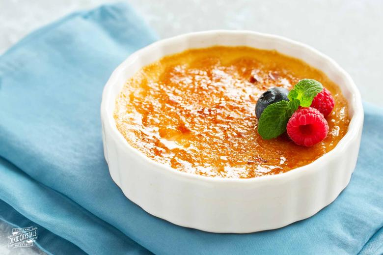

Creme Brulee

Disclaimer: This recipe was taken from Dixie Crystals for the sole purpose of this learning experiment. All credits to the owner!
Creamy and Light
This dessert is simple and clean, and delish to boot!
It's my go to whenever I have a little more time for something extra after dinner.
Ingredients
- Whole milk x 240ml
- Heavy cream x 720ml
- Vanilla bean x 1 (split)
- Granulated sugar x 210g
- Egg yolks x 10
- (For caramelizing) Granulated sugar x 67g
Steps
- Preheat oven to 162.5 Celsius.
- Heat milk, cream, and vanilla bean in a medium saucepan over med-high heat until it reaches a slow boil.
Remove from heat when bubbles appear along sides of pan. Allow to cool for 10 minutes.
- In a medium-sized bowl, quickly whisk sugar with egg yolks. Slowly pour cream into egg yolk mixture.
Whisk until well combined.
- Strain mixture through a fine sieve into a large measuring cup. Scrape vanilla bean to remove remaining seeds. Add seeds to custard and stir.
- Place a ten 4-ounce ramekins into a 2-inch deep roasting pan or baking dish. Pour creme brulee mixture into ramekins.
- Set baking pan into oven and carefully pour enough water into the pan till halfway up sides of ramekins.
- Bake for 45-50 minutes, or until custard no longer trembles.
Check early as baking time will depend on ramekin depth. Custard should be set, not soupy, with only a small jiggle in the center.
- When done, carefully remove from oven and allow ramekins to cool in the water bath.
When cool enough to handle, remove from water bath, cover with plastic wrap, and refrigerate for at least 4 hours to 2 days before serving.
- When ready to serve, remove from refrigerator and sprinkle tops with 1/3 cup granulated sugar.
Immediately caramelize with a blow torch or under a broiler.
- Serve immediately, and enjoy!